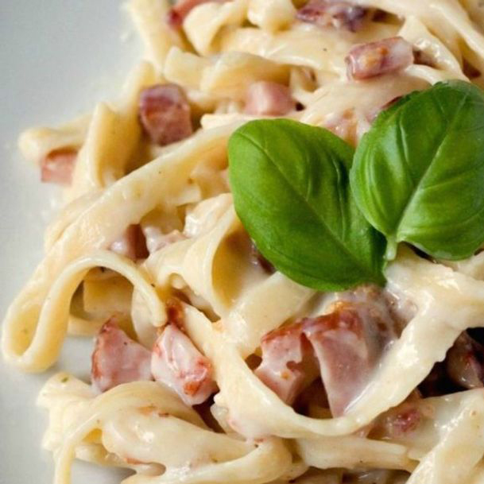

Pasta carbonara
 Esta receta del clásico plato de comida italiana es una verdadera delicia; lo mejor de todo es que no te
toma mucho tiempo prepararla y sólo necesitas estos ingredientes (para dos personas):
Ingredientes:
- 200 gramos de pasta
- 200 gramos de crema de leche
- 6 tiras de panceta
- Medio cubo de caldo concentrado (de res o pollo)
- 50 cl de vino blanco seco
- Sal y pimienta al gusto